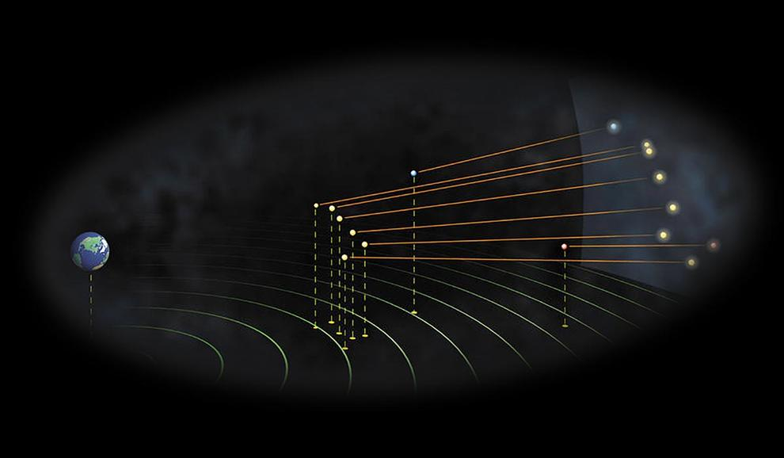
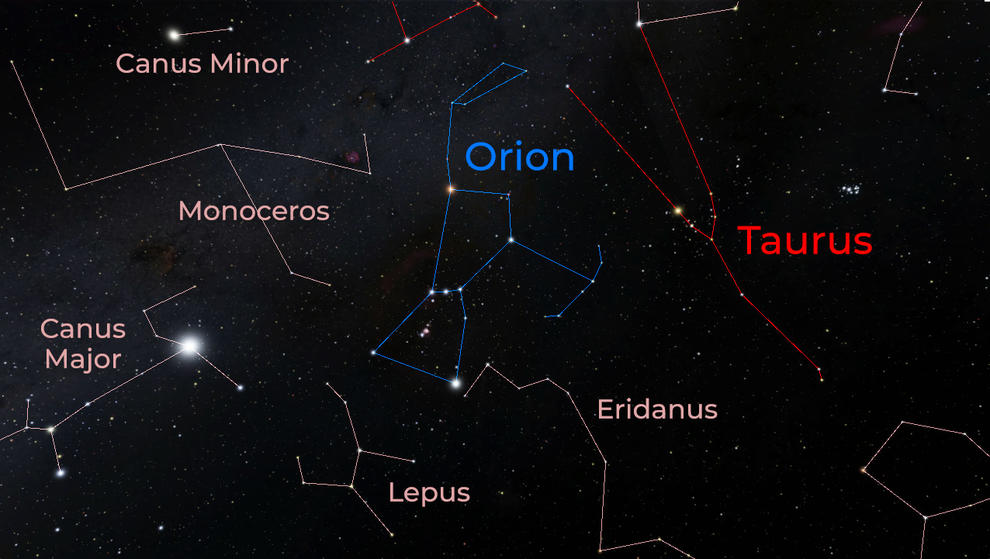
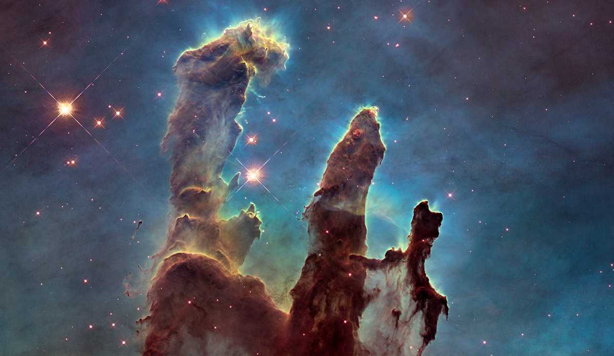

What are the big ideas about astronomy?
1. The sky is vast and distances between objects can be very large
To the naked eye, the stars look like tiny points of light . But stars are not tiny—they're huge, burning balls of gas, like our Sun. They just appear small because they are so far away. The nearest star to our solar system is 4 light years away, which is 20 trillion miles.
The Big Dipper shining brightly against a field of stars in the night sky.
The stars of the Big Dipper may all look the same distance away, as if they were pasted on the wall of a giant dome.
The stars may all look the same distance away, as if they were pasted on the wall of a giant dome. But that's an illusion too. Some stars are tens of thousands of light years farther away from Earth than others. You can see this illusion for yourself by building your own Big Dipper,
A “side view” of The Big Dipper, with Earth on one side of the image, showing that the stars are at different distances from Earth. But if you look at the same stars from a different place in the universe, you'll see that some stars are billions of miles farther away than others!
How can we tell how far away a star is? One clue is its brightness. Distant stars look dimmer than they would if we were close to them. But that clue isn’t very reliable, because stars vary a lot in their brightness. Some stars that stand out in the sky aren’t actually very far away compared to other stars—they’re just incredibly big and bright. And some nearby stars are dim. In fact, our Sun’s closest star neighbor, Proximus Centuri, is so faint and tiny that we need a telescope to see it!
So astronomers rely on measurements of something called parallax to figure out the distances of stars. They look at a nearby star from two different places and compare its position relative to other, much more distant stars.
2. When we look up at the night sky, we see patterns and want to explain them
Early observers looking at the night sky noticed patterns in the stars . These patterns, which we call constellations, might appear to change place, but they don’t change shape. People around the world gave them names (like Orion the hunter or Leo the lion) and told stories about them. You may know some of these stories as myths, or as astrology. Astrology can be fun to think about, but it’s different from astronomy. Astrology is not science!
Early observers also noticed some bright objects in the sky that seem to wander around among the stars. The ancient Greek philosophers called these objects “planets,” which is Greek for “wanderers.” The planets are our near neighbors, and they do move. They orbit the Sun , just as Earth does.
3.The universe contains mysterious, invisible stuff
When NASA began 60 years ago, we had questions about the universe humans had been asking since we first looked up into the night sky. In the six decades since, NASA, along with its international partners and thousands of researchers, have expanded our knowledge of the Universe by using a full fleet of telescopes and satellites. From the early probes of the 1950s and 1960s to the great telescopes of the 1990s and 21st century, NASA scientists have been exploring the evolution of the universe from the Big Bang to the present.